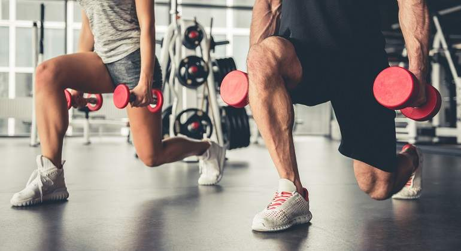

Sport Dream Team
La práctica de deporte es uno de los pilares para una vida saludable a cualquier edad. Ya sea salir a correr, dar largos paseos, jugar un partido de fútbol con los amigos o hacer yoga, practicar algún deporte te hará estar más saludable, además de permanecer más feliz y con más energía gracias a los beneficios de la actividad física. Por eso, en este artículo te vamos a explicar la importancia del deporte para una vida saludable

El deporte es una excelente forma de pasarlo bien y de conseguir objetivos, como el desarrollo muscular, la pérdida de peso o la reducción de grasas. Además, la actividad física también beneficia la regulación hormonal y el refuerzo del sistema inmunológico y contribuye a un adecuado descanso y a reducir la fatiga. Los beneficios del deporte no son solo físicos, sino que también afectan a la salud mental, pues previene la aparición de la depresión y el estrés, además de que mejora la autoestima e, incluso, las relaciones sociales cuando se practican deportes de equipo. En definitiva, ¡te hace sentir bien!, ¡de ahí la importancia del deporte.
"CUIDATE, TU CUERPO TE LO AGRADECERA"
"NOSOTROS LO HACEMOS POR TI"
Muchas veces hablamos de beneficios del deporte sin saber que de lo que estamos hablando es de ejercicio físico. Así que vamos a explicar primero la diferencia entre uno y otro. Según la OMS (Organización Mundial de la Salud) cualquier movimiento corporal que implique gasto de energía se denomina actividad física. Cualquier acción que exija un gasto de energía por encima del metabolismo basal, que es la energía necesaria para que el cuerpo realice las funciones básicas. De esta forma, por el simple hecho de moverte cuando bajas a tirar la basura o vas a hacer la compra, ya estás haciendo actividad física. Cuando hablamos de ejercicio físico nos referimos a una actividad planificada y estructurada y que, además, cumple un objetivo: mejorar tu condición física y sentirte más saludable. Ir al gimnasio regularmente, planificar andar más de 30 minutos diarios o salir en bici se consideran ejercicio físico. Y, por último, el deporte. Se trata de una actividad física especializada, que necesita que te entrenes, que tiene un carácter competitivo y que, además, se rige por unas normas. Para que nos entendamos: salir a correr a menudo es ejercicio físico, pero salir a correr para prepararte para un maratón o durante los entrenos de un equipo de baloncesto es hacer deporte. "No te midas por lo que has logrado, sino por lo que deberías haber logrado con tu habilidad"
¡Nunca te rindas!
Como Te Cuidas

Son detalles pero nada como cumplir tus objetivos y mas aun cuidarte mientras lo logras.
Muestrame masDietas y Rutinas

Aunque no lo parece las dietas y las diferentes rutinas son muy importantes en un estilo de vida saludable.
Muestrame masEquipo De Fútbol
Equipo deportivo que hace parte de sport dream team formado en el año 2010 con el objetivo de conseguir una cantidad de objetivos los cuales comenzaron con formar una gran cantera de futbol y alcanzar varios títulos como lo han sido la copa nacional y otro sin fin de títulos lo que más nos gusta al salir al terreno de juego es saber la gran cantidad de aficionados a los cuales hacemos felices cada vez que ganamos y los cuales nos acompañan en los malos momentos por eso tu aficionado o aficionada bienvenidos a la página del más grande no por palmares si no por el amor y pasión de sus aficionados mas fieles.